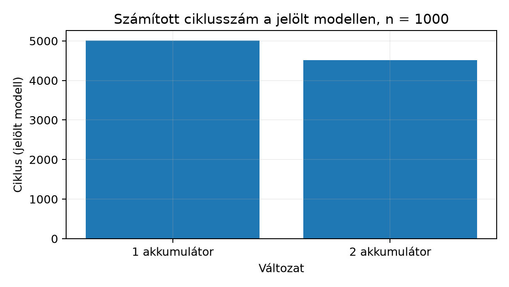

Tegyük fel, hogy egy numerikus rutin forró ciklusát elemezzük. Az
a tömb mérete néhány ezer elem, így az előző alfejezet szerint a cache-találati arány
magas, a DRAM-elérés ritka. A mért futási idő mégis többszöröse annak,
amit az utasításszám és az órajel alapján naivan várnánk. A szűk
keresztmetszet — egy több utasítást egyszerre kibocsátó valós magon —
gyakran nem a memória, hanem egy szerkezeti tény: a ciklusmag minden
iterációja ugyanarra a regiszterre épül, és a pipeline nem tudja
átlapolni az egymásra váró műveleteket. Az alfejezet egyszerű modelljén
azt is látni fogjuk, mikor nem ez a szűk keresztmetszet.
Ez az alfejezet azt a mechanizmust bontja fel, amely az ilyen
lassulást okozza. Célunk, hogy az olvasó a s = s + a[i]
típusú kódot ne csak helyesnek, hanem ütemezhetőnek is
lássa, és meg tudja becsülni, mennyi ciklust veszít egy adott függőségi
minta. A modell, amit használunk, szándékosan egyszerű: egy sorrendi
(in-order), egyszeres kibocsátású, négyfokozatú pipeline. Nem ciklusra
pontos leírás egy konkrét ARM magról, hanem jelölt, didaktikus
modell, amelyre pontos ciklusszám-levezetés adható, és amelynek
korlátait külön jelöljük.
Pipeline (futószalag): a processzor azon szervezési elve, hogy az utasítás végrehajtását egymást követő, egyszerű lépésekre bontja, és a különböző utasítások különböző lépéseit egyidejűleg, átlapolva végzi.
A modellünkben négy fokozat van:
| Fokozat | Név | Mit tesz |
|---|---|---|
| F | fetch | a következő utasítás lehívása az utasítás-memóriából |
| D | decode | dekódolás, regiszterolvasás (operandusok betöltése) |
| E | execute | ALU-művelet, címgenerálás, elágazás-kiértékelés |
| W | writeback | az eredmény visszaírása a regiszterfájlba |
Miért gyorsít az átlapolás? Különbséget kell tennünk latency (késleltetés) és throughput (áteresztőképesség) között. Egyetlen utasítás négy ciklus alatt fut végig (latency = 4), de ha a fokozatok átlapolhatók, akkor amikor az első utasítás a W fokozatban van, a második már az E-ben, a harmadik a D-ben, a negyedik az F-ben. Stabil állapotban minden ciklusban befejeződik egy utasítás: throughput = 1 utasítás/ciklus. egymástól független utasításra az összes ciklusszám (a feltöltési és kiürítési ciklusokkal együtt), szemben a nem pipeline-olt -nel.
Adatfüggőségi akadály (data hazard): olyan helyzet, amikor egy utasítás operandusa olyan eredmény, amelyet egy korábbi, még a pipeline-ban lévő utasítás állít elő, és nincs olyan útvonal (pl. forwarding), amely az értéket időben eljuttatná a fogyasztóhoz. Ilyenkor a fogyasztó várakozási ciklust (stall) kap, és a pipeline-ba egy buborék (bubble) kerül.
A klasszikus besorolás szerint read-after-write (RAW, olvasás írás után) függőségről van szó: a fogyasztó olvasni akar, a termelő még nem írt. Sorrendi pipeline-ban write-after-write (WAW) és write-after-read (WAR) veszély nem lép fel, mert a kibocsátási sorrend megegyezik a program sorrendjével.
Modellfeltevések (jelölt, egyszerűsített):
Ez a modell nem ciklusra pontos leírás egy AArch64 magról: a valós Cortex-A magok hosszabb, többszörös kibocsátású, sorrenden kívüli (out-of-order) pipeline-nal és bonyolult forwarding-hálózattal rendelkeznek. Ciklusszám-levezetésre azonban pontosan használható.
Tekintsük ezt a két utasítást (A64 ISA):
add x1, x2, x3 // termelő: x1 előállítása
sub x4, x1, x5 // fogyasztó: x1 azonnali felhasználásaKiindulás: nincs forwarding.
A termelő add ciklusai:
| Ciklus | 1 | 2 | 3 | 4 |
|---|---|---|---|---|
| add | F | D | E | W |
Az x1 tényleges értéke a regiszterfájlban a 4.
ciklus végén jelenik meg, mert a W fokozat ekkor fejeződik
be.
A fogyasztó sub ideálisan a 2. ciklusban kerülne F-be,
és a D fokozata a 3. ciklusban olvasná az x1-et. Ekkor
viszont a regiszterfájlban még a régi érték van. A fogyasztó D
fokozata csak azután olvashat, hogy a termelő W fokozata
befejeződött, azaz az 5. ciklusnál korábban nem.
Ezért a sub D fokozata a 3. ciklus helyett az 5.
ciklusban indul. A köztes 3. és 4. ciklus a sub számára
várakozási buborék. A sub teljes
életciklusa:
| Ciklus | 3 | 4 | 5 | 6 | 7 |
|---|---|---|---|---|---|
| sub | stall | stall | D | E | W |
A két utasítás összes ciklusszáma 7 (a buborékokkal), szemben a független eset 5 ciklusával: 2 stall ciklus.
Forwarding bevezetése. A forwarding (továbbítás,
bypass) lényege: az eredmény nem várja meg a W fokozatot, hanem a
termelő E fokozatának kimenetéről közvetlenül a fogyasztó E fokozatának
bemenetére kerül. Esetünkben a termelő E fokozata a 3. ciklusban
fejeződik be; a sub E fokozata a 4. ciklusban kezdődik, így
az érték épp időben érkezik. A stall 2-ről 0-ra csökken
— feltéve, hogy a fogyasztó E fokozata legalább egy ciklussal a termelő
E után kezdődik. Ez pontosan teljesül a szomszédos ALU-utasításokra.
Load-use eset. A ldr x1, [x2] utasítás
adata a modell 3. feltevése szerint az E fokozat végén áll elő, vagyis a
modellben ugyanúgy továbbítható, mint egy ALU-eredmény: a szomszédos
fogyasztó nem kap várakozást. Ez a modell
egyszerűsítése. A valós magokban a betöltés eredménye általában később
érhető el, mint egy egyszerű ALU-művelet eredménye; a
load-to-use késleltetés azonban mikroarchitektúra-jellemző, nem
ISA-szabály, és magonként eltér. A modellből számolt ciklusszám ezért
egy konkrét gépre sem alsó korlát, csak a modell szerinti érték.
Ciklusvesztés általános képlete (jelölt modell). Időkonvenció: minden ciklusszám a megnevezett fokozat kezdő ciklusát jelöli, és egy fokozat a ciklusa végén fejeződik be. Legyen
Ekkor
Ha az eredmény az 5. ciklus elején érhető el, a fogyasztónak pedig a 4. ciklusban lenne rá szüksége, ciklust kell várni; ha az eredmény korábban kész, mint ahogy kell, a várakozás 0.
Ellenőrzés a fenti két esettel.
add W fokozata a 4. ciklus végén zárul,
így az x1 az 5. ciklus elején olvasható:
.
A sub D fokozata várakozás nélkül a 3. ciklusban kezdődne:
.
A képlet szerint
stall — egyezik a táblázattal.add E fokozata a 3. ciklus végén zárul, az
eredmény a 4. ciklus elején továbbítható:
.
A sub E fokozata várakozás nélkül a 4. ciklusban kezdődne:
.
A képlet
stallt ad.Munkakönyvtár: ~/arm-labor/a64/a050/ —
az alfejezet minden laborfájlja ide kerül, és minden parancs innen
futtatandó (a könyvtárrendet a Labor-alapkörnyezet alfejezet írja le).
mkdir -p ~/arm-labor/a64/a050
cd ~/arm-labor/a64/a050A kiindulópont a következő C-függvény:
long sum_seq(const long *a, long n) {
long s = 0;
for (long i = 0; i < n; i++) s = s + a[i];
return s;
}Assemblyben két változatot írunk ugyanerre a számításra:
lab_sum1 egy akkumulátorral (az x0 lánc),
lab_sum2 kettővel (x0 és x5).
Mindkettő teljes, C-ből hívható függvény az AAPCS64 szerint
(x0 = a, x1 = n, eredmény
x0-ban). A lab-pipe-sum.s tartalma:
// lab-pipe-sum.s — A64 ISA, AArch64 Linux; GNU as.
// long lab_sum1(const long *a, long n); egy akkumulátor (x0)
// long lab_sum2(const long *a, long n); két akkumulátor (x0, x5)
// Levélfüggvények, keretet nem építenek, ezért CFI nélküliek (lásd 8.3).
.text
.p2align 2
.global lab_sum1
.type lab_sum1, %function
lab_sum1: // belépéskor: x0 = a, x1 = n
mov x4, x1 // x4 = n
mov x1, x0 // x1 = a
mov x0, #0 // x0 = s
mov x2, #0 // x2 = i
cmp x2, x4
b.ge 2f
1: ldr x3, [x1, x2, lsl #3] // x3 = a[i]
add x0, x0, x3 // s = s + x3
add x2, x2, #1 // i++
cmp x2, x4
b.lt 1b
2: ret
.size lab_sum1, .-lab_sum1
.global lab_sum2
.type lab_sum2, %function
lab_sum2: // belépéskor: x0 = a, x1 = n
mov x4, x1
mov x1, x0
mov x0, #0 // 1. akkumulátor
mov x5, #0 // 2. akkumulátor
mov x2, #0
cmp x4, #0
b.le 4f
1: add x7, x2, #1
cmp x7, x4
b.ge 2f
ldr x3, [x1, x2, lsl #3]
ldr x6, [x1, x7, lsl #3]
add x0, x0, x3
add x5, x5, x6
add x2, x2, #2
b 1b
2: cmp x2, x4 // páratlan n: egy elem maradt
b.ge 3f
ldr x3, [x1, x2, lsl #3]
add x0, x0, x3
3: add x0, x0, x5
4: ret
.size lab_sum2, .-lab_sum2
.section .note.GNU-stack,"",%progbitsA lab_sum1 ciklusában az add x0, x0, x3
minden iterációban ugyanarra az x0-ra épül: az előző
iteráció eredményét használja. Ez egy cikluson átívelő függőség
(loop-carried dependency). A lab_sum2 két
független láncot vezet: az add x0 és az add x5
egyike sem várja a másik eredményét.
Ciklusonkénti levezetés a jelölt modellen. A modellben az utasítások sorrendben, ciklusonként egyesével lépnek be, és — a feltevések szerint — az elágazásnak nincs külön költsége. Várakozás nélkül egy végrehajtott utasításból álló futás ciklus (a +3 a pipeline feltöltése). Meg kell tehát nézni, hol keletkezik várakozás:
Függőség a lab_sum1 ciklusában |
Távolság (utasítás) | Stall | |
|---|---|---|---|
ldr x3 → add x0, x0, x3 |
1 | 0 | 0 |
add x2 → cmp x2, x4 |
1 | 0 | 0 |
cmp → b.lt (NZCV) |
1 | 0 | 0 |
add x0 → következő iteráció add x0 |
5 | negatív | 0 |
Forwarding mellett a szomszédos függőség sem okoz várakozást, a lánc
két tagja között pedig öt utasítás van. A lab_sum2-ben
ugyanez a helyzet (add x7 → cmp x7: 0;
ldr x6 → add x5: 0). Ebben a modellben
tehát egyik változatban sincs stall, és a ciklusszám a
végrehajtott utasítások számából adódik.
esetén:
| Változat | Végrehajtott utasítás | Ciklus a modellben | Ciklus / elem |
|---|---|---|---|
lab_sum1: 6 belépő + 1000 × 5 + ret |
5007 | 5010 | ≈ 5,0 |
lab_sum2: 7 belépő + 500 × 9 + 3 kilépő + 2 farok + 1
összevonás + ret |
4514 | 4517 | ≈ 4,5 |
A különbség (kb. 10%) nem a függőségi lánc
megtöréséből származik — a modellben a lánc nem okozott
várakozást —, hanem abból, hogy a lab_sum2 két elemre 9, a
lab_sum1 két elemre 10 utasítást hajt végre: a
ciklusvezérlés aránya kisebb. Az utasításszámokat a laborban az
emulátorral is megszámoltuk (lásd a Források szakaszt).

Mikor számít a függőségi lánc? A lánc akkor válik szűk keresztmetszetté, ha a lánc egy körének késleltetése nagyobb, mint amennyi idő alatt a gép a ciklus többi utasítását amúgy is végrehajtaná. Egyszeres kibocsátású gépen, utasításos ciklusmaggal és ciklus késleltetésű láncművelettel a modell szerint:
A fenti modellben
(továbbított add) és
,
ezért a lánc nem számít. Valós, többszörös kibocsátású
(és gyakran sorrenden kívüli) magon a
utasítás egy ciklusnál jóval rövidebb idő alatt is végrehajtódhat, a
hosszabb késleltetésű láncműveletek (például lebegőpontos összeadás)
pedig több ciklust igényelnek — ilyenkor a lánc dönt, és több
akkumulátor valóban gyorsít. Hogy egy adott magon mennyit, azt ez a
modell nem mondja meg: valós ciklusszámhoz egy megnevezett, fizikai
AArch64 processzoron végzett mérés kell (lásd Mikrobenchmark készítése és eredmények
értelmezése).
1. Csak objektummá fordítás — a ciklusmag statikus vizsgálatához elég az assembly-fájl:
# Target: AArch64 Linux; csak összeállítás és visszafejtés, futtatás nélkül.
aarch64-linux-gnu-as -o lab-pipe-sum.o lab-pipe-sum.s
aarch64-linux-gnu-objdump -d lab-pipe-sum.o2. A teljes labor — a futtatáshoz teszthajtó is
kell, amely a két változatot egy C-referenciával veti össze, a farokágat
is lefedő
értékekre. A lab-pipe-main.c tartalma:
/* lab-pipe-main.c — teszthajtó a lab-pipe-sum.s két függvényéhez. */
#include <stdio.h>
long lab_sum1(const long *a, long n);
long lab_sum2(const long *a, long n);
/* C-referencia; az elemek kicsik, előjeles túlcsordulás nem fordul elő. */
static long lab_sum_ref(const long *a, long n)
{
long s = 0;
for (long i = 0; i < n; i++) s = s + a[i];
return s;
}
int main(void)
{
static long a[1001];
static const long ns[] = { 0, 1, 2, 3, 999, 1000, 1001 };
int ok = 1;
for (long i = 0; i < 1001; i++) a[i] = (i % 7) - 3; /* -3..3 */
for (unsigned k = 0; k < sizeof ns / sizeof ns[0]; k++) {
long n = ns[k];
long r = lab_sum_ref(a, n), s1 = lab_sum1(a, n), s2 = lab_sum2(a, n);
int good = (s1 == r) && (s2 == r);
printf("n=%4ld ref=%4ld sum1=%4ld sum2=%4ld %s\n",
n, r, s1, s2, good ? "OK" : "HIBA");
ok &= good;
}
return ok ? 0 : 1;
}# Target: AArch64 Linux, qemu-user. Tiszta könyvtárban, a két fenti fájlból.
aarch64-linux-gnu-gcc -std=c11 -O2 -Wall -Wextra -static \
lab-pipe-main.c lab-pipe-sum.s -o lab-pipe
qemu-aarch64 ./lab-pipe ; echo "exit=$?"Kimenet (mérve: GNU + glibc + QEMU 8.2.2, a lektor mérése):
n= 0 ref= 0 sum1= 0 sum2= 0 OK
n= 1 ref= -3 sum1= -3 sum2= -3 OK
n= 2 ref= -5 sum1= -5 sum2= -5 OK
n= 3 ref= -6 sum1= -6 sum2= -6 OK
n= 999 ref= -5 sum1= -5 sum2= -5 OK
n=1000 ref= -3 sum1= -3 sum2= -3 OK
n=1001 ref= 0 sum1= 0 sum2= 0 OK
exit=0A program a helyességet ellenőrzi; ciklusszámot nem mér, és a QEMU futási idejéből sem olvasható ki ciklusszám.
QEMU-korlát. A qemu-aarch64 user-mode
emulátor (és a qemu-system-aarch64 is) nem ciklusra
pontos: utasítás-szintű dinamikus fordítást (TCG) végez, és nem
modellezi a valós pipeline hosszát, a forwarding-késleltetést vagy a
kibocsátási korlátokat. Az itt megadott ciklusszámok a jelölt
modellből számított értékek; a QEMU-ból csak az
utasítás-viselkedés és a helyesség ellenőrizhető, relatív időmérésre is
csak nagyon fenntartással. Valós ciklusszámhoz fizikai AArch64 host és
pl. hardveres teljesítményszámláló szükséges (lásd Mikrobenchmark készítése és eredmények
értelmezése).
Hiba 1: a QEMU futási időből ciklusszámra
következtetni. Tünet: két implementáció
time-különbsége nem korrelál a levezetett ciklusszámmal.
Hipotézis: QEMU TCG nem pipeline-modellez. Adatgyűjtés:
qemu-aarch64 -d in_asm és objdump -d
összehasonlítás. Egy változtatás: hardver nélkül csak az utasításszám és
a statikus elemzés marad; mérés fizikai hostra tolása.
Hiba 2: a modell várakozásmentességét valós gépre
átvinni. A jelölt modellben a továbbított load-use és
ALU-függőség 0 stallt ad. Valós magon a load-to-use késleltetés
általában nagyobb, és mikroarchitektúrától függ — nem ISA-szabály, ezért
egy konkrét számot sem lehet „kötelezőnek” tekinteni. Ellenpróba:
fizikai gépen mérjük ugyanazt a ciklust úgy is, hogy az ldr
és a fogyasztó közé független utasítást teszünk; ha az idő csökken, a
betöltés késleltetése számított.
Hiba 3: az utasításszámot a ciklusszámmal azonosítani. Ha egy ciklusmag 8 utasítás, az nem jelenti azt, hogy 8 ciklus/iteráció: ha van benne 1 cikluson átívelő lánc, a mag hosszabb lehet, mint az utasításszám.
Hiba 4: a fordító optimalizálására hagyatkozni
vakon. A -O2/-O3 sokszor megtöri a
függőségeket, de nem garantált; az objdump -d megmutatja a
tényleges ütemezést. Ellenpróba: a kódot -O0-val és
-O3-mal is disassemblálni és a ciklusmag utasításlistáját
összevetni.
Hiba 5: az utasítás-átrendezést (instruction scheduling) összekeverni a program-szemantika megváltoztatásával. Az ütemezés csak olyan utasításokat cserélhet fel, amelyek között nincs adat- vagy vezérlési függőség. Az átrendezés ötlete fogalmi szinten: a termelő és a fogyasztó közé független utasításokat ékelünk, hogy a stall „hasznos” munkával teljen. Ellenpróba: a cserélt utasítások operandushalmazainak metszetét ellenőrizzük.
1. (magyarázó, alapszint — cél: megértés-ellenőrzés) Rajzold fel az alábbi utasítássor pipeline-diagramját a jelölt modellben (nincs forwarding), és add meg az összes ciklusszámot:
mul x1, x2, x3
add x4, x1, x5
add x6, x4, x5Hány stall ciklus keletkezik, ha forwarding elérhető?
2. (implementációs, középszint — cél: rutinépítés)
Írj A64 assembly-t egy
int64_t dot_product(const int32_t *a, const int32_t *b, int n)
függvényre, amely 64 bites szorzatok összegét adja vissza. Feltétel: az
összeg elfér int64_t-ban; n <= 0 esetén az
eredmény nulla. Azonosítsd a ciklusmag függőségi láncait, majd alakítsd
át két párhuzamos akkumulátorra. Add meg a módosítás előtti és utáni
várható ciklus/iterációt a jelölt modellen, és indokold a
különbséget.
3. (hibakeresési/mérési, középszint — cél:
rutinépítés) Fordítsd le a kidolgozott példa
sum_seq-ét -O0 és -O2 szinten.
objdump -d-vel hasonlítsd össze a generált
ciklusmag-utasításokat. Mutasd meg, hol töri meg a fordító a függőségi
láncot, és hol nem. Magyarázd meg, miért nem
elfogadható a QEMU futási idejéből ciklusszámra következtetni, és nevezd
meg, milyen mérési módszer adna hiteles adatot.
1. megoldás — Segítség. Rajzold fel mindhárom
utasítás F/D/E/W négyzetrácsát ciklusonként; a D fokozat
csak akkor indulhat, ha a termelő W fokozata már lezárult
(forwarding nélkül) vagy E fokozata lezárult (forwarding
mellett).
1. megoldás — Teljes megoldás. Nincs forwarding:
mul W-je a 4. ciklus végén zárul, add x4 D-je
csak az 5. ciklusban indulhat → 2 stall; a fogyasztó add x6
ugyanígy 2 stallt kap az előző add x4-hez képest. Teljes
ciklusszám:
ciklus. Forwarding mellett az ALU→ALU láncokon a stall 0-ra csökken, így
az összes ciklusszám
(független esettel azonos). A modellben a mul is
egyciklusos E-fokozatú; valós magon 3–5 ciklus is lehet, ekkor
forwarding mellett is marad stall.
2. megoldás — Segítség. A legbelső
ldr→mul→add lánc egyetlen akkumulátorral (x0)
cikluson átívelő láncot alkot — hogyan lehet két független
x0/x8-szerű akkumulátort bevezetni, hasonlóan
a fejezet sum_seq kétakkumulátoros átalakításához?
2. megoldás — Teljes megoldás. AAPCS64-konform
változat: az a az x0-ban, a b az x1-ben, az
n a w2-ben jön, ezért a 64 bites ciklushatárhoz
sxtw kell.
.global dot_product
.type dot_product, %function
dot_product:
sxtw x2, w2
cmp x2, #0
b.le .Ldot_zero
mov x3, #0
mov x4, #0
.Ldot_loop:
ldrsw x5, [x0, x3, lsl #2]
ldrsw x6, [x1, x3, lsl #2]
mul x5, x5, x6
add x4, x4, x5
add x3, x3, #1
cmp x3, x2
b.lt .Ldot_loop
mov x0, x4
ret
.Ldot_zero:
mov x0, #0
ret
.size dot_product, .-dot_productEgy akkumulátorral a ciklusmag 7 utasítás/elem (2×ldrsw,
mul, add, add, cmp,
b.lt), a jelölt modellben ≈7 ciklus/elem. Kétakkumulátoros,
kettesével kibontott változat:
.global dot_product2
.type dot_product2, %function
dot_product2:
sxtw x2, w2
cmp x2, #0
b.le .Ldot2_zero
mov x3, #0
mov x4, #0
mov x5, #0
lsr x6, x2, #1
cbz x6, .Ldot2_tail
.Ldot2_loop:
ldrsw x7, [x0, x3, lsl #2]
ldrsw x8, [x1, x3, lsl #2]
mul x7, x7, x8
add x4, x4, x7
add x3, x3, #1
ldrsw x9, [x0, x3, lsl #2]
ldrsw x10, [x1, x3, lsl #2]
mul x9, x9, x10
add x5, x5, x9
add x3, x3, #1
subs x6, x6, #1
b.ne .Ldot2_loop
.Ldot2_tail:
cmp x3, x2
b.ge .Ldot2_done
ldrsw x7, [x0, x3, lsl #2]
ldrsw x8, [x1, x3, lsl #2]
mul x7, x7, x8
add x4, x4, x7
.Ldot2_done:
add x0, x4, x5
ret
.Ldot2_zero:
mov x0, #0
ret
.size dot_product2, .-dot_product2A kétakkumulátoros mag 12 utasítás / 2 elem, a ciklusvezérléssel
együtt 13/2 = 6,5 utasítás/elem; madd-dal 11/2 = 5,5. A
különbség itt is a ciklusvezérlés arányából jön: a modellben a két
add x4/add x5 lánc között elég utasítás van
ahhoz, hogy ne keletkezzen várakozás. A láncmegtörés akkor számít, ha a
láncművelet késleltetése meghaladja a többi munka idejét (többszörös
kibocsátású vagy hosszú szorzású magon); ezt csak mérés dönti el. A
teljes kód C-ből hívható: .global, .type,
ret, és a visszatérési érték az x0-ban.
3. megoldás — Segítség. Gondold át, mit kell
garantálnia az -O0-nak (minden változó bármikor
megfigyelhető legyen) — ez miért kényszerít ki extra load/store láncot
az akkumulátor körül, amit -O2 elkerülhet?
3. megoldás — Teljes megoldás. -O0
mellett a fordító gyakran minden iterációban kiírja/beolvassa az
s-t a verembe, ami extra load/store láncot ad és rontja az
ütemezést. -O2 mellett s regiszterben marad,
és a fordító néha maga is unroll-ol és több akkumulátort vezet be. A
lánc nem mindig törik meg: a -O2 is
hagyhat szigorúan sorrendi add-sorozatot. A QEMU futási
ideje TCG-alapú, nem pipeline-modellező, ezért relatív ciklusszámra
alkalmatlan; hiteles adathoz fizikai AArch64 host és hardveres
PMU-számláló (pl. perf stat cycles eseménnyel)
szükséges, és ott is jelölni kell a QEMU-tól eltérő futási
feltételeket.
A lektor mérése (GCC 13.3, aarch64-linux-gnu-gcc):
-O0 24 utasítás (az s a veremben);
-O2 13 utasítás, egy akkumulátor,
mutató–végcím-összehasonlítás
(ldr x1, [x2], #8; add x0, x0, x1; cmp x2, x3; b.ne), sem
unroll, sem több akkumulátor; -O3 33 utasítás,
NEON-vektorizált (2 sávos) változat. A -O2 négyutasításos
ciklusmagja jó ellenpélda a kézi öt utasításos változatra.
A pipeline átlapolással növeli az áteresztőképességet: egy négyfokozatú modellben a latency 4 ciklus marad, de a throughput elérheti az 1 utasítás/ciklust. Az adatfüggőségi akadály (RAW) akkor keletkezik, ha a fogyasztó a termelő eredményét a rendelkezésre állás előtt akarja olvasni: a jelölt modellben forwarding nélkül 2 stall, forwarding mellett ALU→ALU esetben 0 stall adódik, és a modell a load-use esetet is így kezeli (a valós load-to-use késleltetés mikroarchitektúra-függő). A ciklusvesztés azonos időkonvenció mellett . A modellben a kétakkumulátoros összegzés csak a ciklusvezérlés arányát csökkenti; a függőségi lánc többszörös kibocsátású vagy hosszú késleltetésű esetben dönt, amit mérni kell. A QEMU nem ciklusra pontos, ezért az itt szereplő ciklusszámok a modellből számított értékek.
Továbbhasznált definíciók:
A linkek és a dokumentumverziók közös állapota az Olvasói útmutató forrásállapot-táblájában van; itt csak az alfejezet saját megállapításai szerepelnek.
master, nem egy konkrét kiadott verzió állapotát
tükrözi.Ellenőrzési hiányok, amelyek a fenti ellenőrzés után is ténylegesen fennmaradnak:
lab-pipe teszthajtó kimenete és a két függvény
végrehajtott utasításszáma
(:
5007 és 4514) mérve (GNU + glibc + QEMU 8.2.2, a lektor mérése); a
kimenet betűre egyezik a fenti blokkal, a kilépési állapot 0, és az
utasításszámok a forrásból újraszámolva helyesek. A ciklusszámok a
modell szerint számítottak, nem mértek.gcc-aarch64-linux-gnu buildjében
ellenőrizendő.